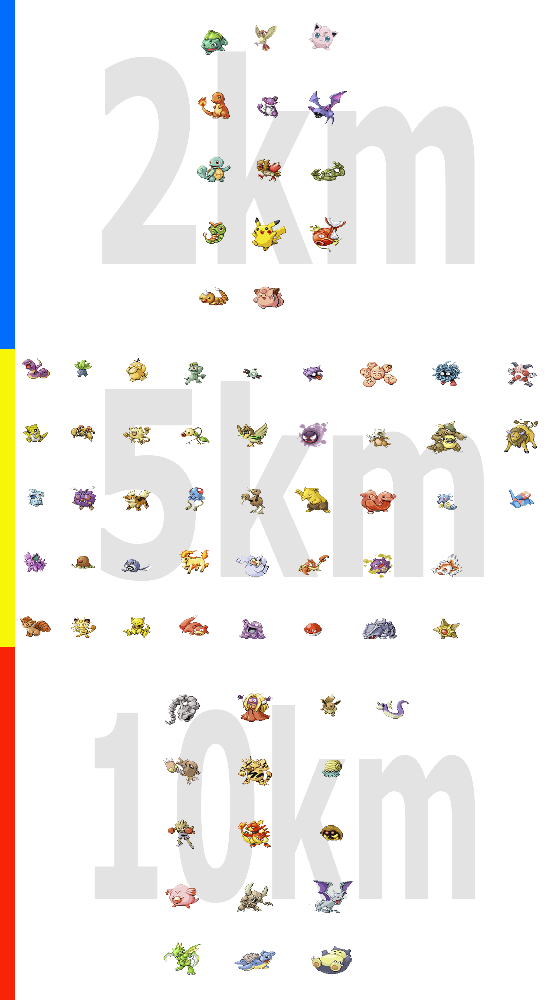

Яйця в Pokémon GO?
Отримуючи яйця на синіх спотах ( точках ) на карті , ви можете їх помістити в інкубатор ( краще відразу мати кілька інкубаторів ) , щоб вилупився новий покемон . Після того як ви розмістили яйце в інкубаторі , вам потрібно пройти певну відстань з включеним додатком Pokemon GO - 2 , 5 і 10 км . Після чого вилупиться звірятко , в залежності від вашого кілометражу .Таблиця , в якій вказані потенційні покемони , які вилупляться в залежності від пройденого вами відстані . 